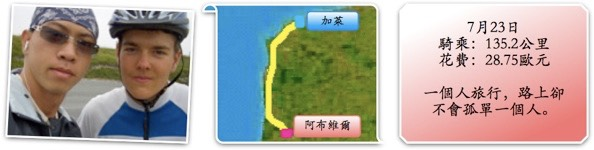
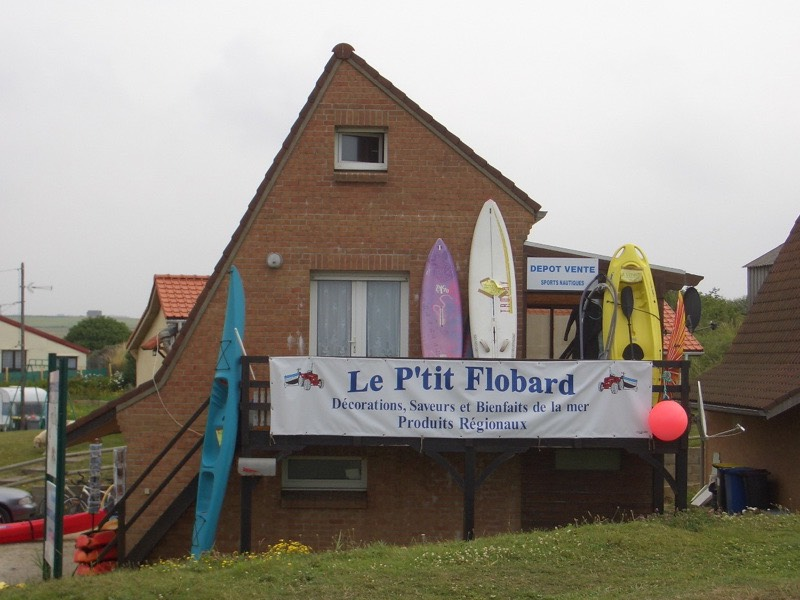

出國旅行都睡到日上三竿才起床，明明就已經睡了八、九個小時，但還是要賴床才甘心。
早上八點半才『下床』（大概七點多就醒了），看到滿地的雜物，都是昨天拿出來曝曬的。
想到光是把這些哩哩摳摳的東西塞回包包裡，就很想回床上睡覺算了 @@"
努力到了九點半，去車庫把腳踏車牽出來，用打氣筒把胎壓打飽，這樣不容易爆胎。
再把連日騎乘造成的髒污擦拭乾淨，這趟旅行最辛苦的就是FCR1了，感謝你。
臨走之前，跟老闆問一下路線怎麼走，地圖拿出來，又是一條高速公路A16直達阿布維爾。

我就是繞小路的命了，所幸今天的小路單純很多，沿著海岸線的D940直直走，就可以到了。
又跟老闆學了一句法文『再見』。
出發沒多久看到了熱鬧的市集，想去裡面買東西吃，但人好多，騎腳踏車不太方便擠進去。
看起來很美味的燉海鮮湯，吃了一定元氣十足∼
整個早上加萊就陰霧朦朧，相當的寒冷，氣溫大概只有16度吧。
依照老闆交的路線走，果然看到D940，但是分岔成兩條，該走哪邊呢？/_\
往有城鎮的方向移動比較保險，十點鐘的時候看到超級市場，去裡面買了早餐。
一包牛角麵包，裡面有10個，售價1.55歐元，相當於一個牛角麵包台幣6元。
便宜的早餐就這麼打發了，很努力的吃了五個，剩下五個就當午餐吃。
沿著海岸線騎車，除了冷很多之外，海岸線霧色跟海相連在一起，分不出界線在哪。
像我這樣騎著腳踏車又大包小包的人，到處都是，而且很多都是看起來已經6~70歲的老阿公。
非常硬朗的騎著車，車上掛的包包比我的還多，整個頭都白了，鬍鬚好長好長，可是元氣十足。
等我老的時候，不知道能不能像他們這樣還有力氣騎車？
不用擔心一個人騎車會很無聊，看到同樣的單車騎士的時候，互相打個招呼，說聲加油∼
感覺好好呀∼人間處處有溫情。
前面就有一對情侶也是在旅行，爬坡的時候，男生還會輕輕推著女生的背讓她輕鬆一點。
結果沿路觀察下來，女生反而體力比較好，一口氣就爬上了陡坡，男生反而下車用牽的了 ^^"
他們是荷蘭人，加油加油唷！
陡坡的盡頭，有個單車騎士在享受他的餐點，過去閒聊兩句，原來他是德國人。
從德國騎到巴黎（天呀，那有多遠呀？）現在要從巴黎騎到比利時去。
看起來很年輕，互相交換了自己旅行的路線，臨走前，我跟他說『歐嘿福話』（法文的再見）。
他居然用中文跟我說『再見』，讓我差點沒從車上跌下來！
原來他學了四年的中文呀，還能講上兩句呢∼不容易不容易 :D
沿著海岸線走，大約10公里就有一個小城鎮。
然後到處都是觀光客。開著車後面加掛旅行的小車廂，旅行的帳篷滿地都是。
沿海的城鎮，就會有出租風帆、浪板、海上摩托車，相當的熱鬧。

不知名的吃草生物
當然，既然是靠海的城鎮，那麼海鮮是不可少的囉∼
只是買了也不知道要怎麼煮，拍張照片就趕快跑掉。

早上的天氣一開始也是陰茫茫的一片，加上海邊的風大，吹的我好冷。
索性就把雨衣拿出來穿，雨衣不下雨的時候穿，就變成風衣啦。
穿了一個多小時，發現天氣逐漸的轉好，脫下風衣才發現，裡頭已經整身溼了。
在法國騎了六天的腳踏車，幾乎沒有流半滴汗，還以為是體力變好了。
結果大概是天氣比較乾燥的緣故，汗還沒流出來就已經蒸發掉了。
這個標誌是小心騎腳踏車的人。
這個呢，就是小心騎馬的人，雖然沒看到騎馬的人，但是有看到拉馬車的跑過去。

小心被馬後背踢，以及被生氣的牛衝撞。
順著D940走就對了，沿路也都有貼心的腳踏車專用道，跟好多好多騎腳踏車的同好。
下午一點半，到達一個叫BOULDGEN SUR MER的大城市。
空中盤旋著好幾百隻的海鷗（我拍照的時候已經降落2/3了）
帥氣版的麥當勞叔叔
牛群，讓村莊飄著便便味道的兇手。

也總算首度看到通往阿布維爾的指示牌了。
D940走著走著就不見了，換跑到D52，有點小緊張，又是一條地圖上找不到的小路。
走十幾分鐘，D940再度出現，鬆了一口氣。
圓環中間裝飾，依照城鎮不同也很有特色。
氣還沒鬆完，D940又不見了 = =" 這次換跑到N39，又騎了一個小時，才又接回D940。
下午三點五十分，總算把十條牛角麵包都吃完了，便宜是便宜，但味道實在差強人意。
只能用來填飽肚子，稱不上美味，吃這樣的麵包當早餐兼午餐，有點虐待自己。
看到麵包店飄出陣陣香味，聞香下車去補充一下美食，奶油巧克力派，0.9歐元。
老闆娘還幫我裝了滿滿的一瓶水，謝謝妳。
吃著甜過頭的派，覺得體力瞬間補滿，很想衝刺騎個100公里消耗掉。
正好四點半的時候看到了離阿布維爾還有44公里的牌子。
這點程度的距離，平常看到了一定會嘀咕的兩句『怎麼那麼遠...』。
但現在體力正好，加足了腳力往前進，目標七點前抵達。
今天一整路上都被奇怪的小蟲子攻擊，是一種比螞蟻還小的小蟲。
會附著在手臂上、衣服上，雖然牠們既不會咬你，也不會在你身上下蛋。
但看到衣服上爬滿了黑色小蟲，總是有點不爽。
用吹的、用拍的、用扯的，趕走了過沒幾分鐘，又附著了好幾十隻。
一路跟著阿布維爾的牌子走，從D940轉D32再轉N1。
終於在下午六點四十分的時候到了！
（說是下午，但天空跟中午一樣的亮，法國北部到晚上十點天還沒全黑呢）
兩個小時騎了44公里，相當的有效率，這算是很早抵達目的地的一天了。
那麼，開始找旅館吧∼
這幾天住的都是兩顆星的旅館，住宿費都是30歐元起跳，跟當初規劃的用錢方式不太一樣。
每天的開銷，光是住宿就花去4分之3了，除了心痛也沒辦法，總比露宿街頭好。
能夠有個地方讓我洗洗衣服、將電器用品充電、睡覺恢復疲勞，還有什麼比這更重要的呢？
超可愛的小飛機，好像真的能飛的樣子∼
進入阿布維爾之後開始閒晃，看到旅館就去參考一下價錢（店門口都有貼標價）。
突然像挖到寶一樣，找到了比青年旅館還便宜的房間，20歐元一晚上。
但是沒有個人衛浴跟廁所，變成公用的，也沒有電視機可以看（反正我也看不懂）。
床呢∼就真的是單人床了，貨真價實的便宜旅館，總算出現啦。 :)
FCR1停在旅館內的儲藏室，老闆看到我的水壺，好心的問我說要不要拿去冰箱冰起來？
付了住宿費之後，牽著車先往外跑，還沒吃晚餐呢∼
由於剛剛吃了超級甜食的緣故，現在好想吃牛排來轉換口中的味道。
小心不要騎離開旅館太遠，怕等等走不回原本的路。
快餐店都沒賣牛排，好失望呀.....我想吃熱騰騰，超大塊，美味多汁的牛排，
貴一點也沒關係，只要能滿足的口腹之慾就好了，為什麼都找不到呢∼∼
街道上有Thomas Cook的店面，明天來這邊換旅支，身上的現金花了一半多了，補充一點比較好。
找不到牛排，就隨便吃點有肉的東西吧。
眼神深邃的廚師煎的超大尺寸漢堡，裡頭夾有四塊漢堡肉，花哈哈哈∼∼吃的好爽。
配上現炸的薯條跟白色的不知名的醬料，真是一絕，飲料就喝可口可樂。
吃這麼一頓只要超便宜的5.3歐元。
回到旅館，去隔壁餐廳的櫃台（跟旅館老闆是同一個人）買了一張1歐元的刮刮樂。
出了國運氣不知道會不會變好？反正很便宜，就買來試一下手氣吧。
結果摃龜了，花了1歐元，還是有點小鬱卒 /_\
把上衣跟襯衫泡肥皂熱水洗乾淨，白色衣服容易髒，不天天洗的話看起來像流浪漢。

大致上差不多就這樣了，接連三天沒有網路可以用，遊記沒辦法上傳，就先積著吧∼